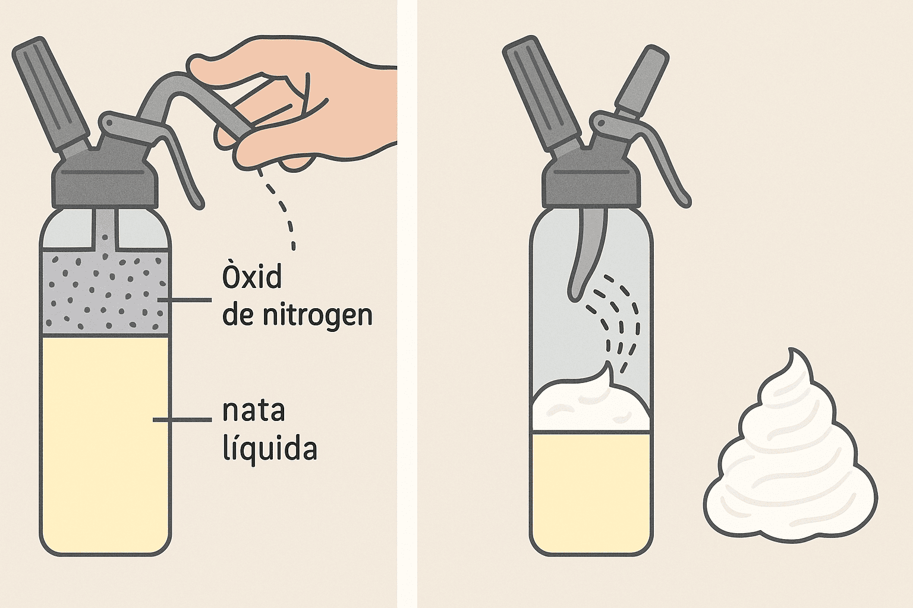

Dins d’un esprai de nata hi ha dues substà ncies principals:
Aquestes dues coses estan dins d’un recipient metà l·lic tancat i resistent, com una llauna.
âš ï¸ Tot el contingut està a molta pressió. Això vol dir que les molècules del gas estan molt juntes, com si estiguessin en un ascensor atapeït!
El gas Nâ‚‚O es dissol dins la nata quan el pot està tancat i a pressió alta. És com quan agites una ampolla de refresc: el gas s’hi dissol dins del lÃquid.
Aquest gas serveix per dues coses:
Aquà ve la part divertida i important!
És com si el gas "inflés" la nata mentre surt!
La nata porta greix (com mantega lÃquida). Aquest greix envolta les bombolles de gas quan es formen i les manté atrapades, creant una estructura estable, com una xarxa que manté l’escuma ferma.
Això fa que no s’esfondri de seguida i que puguis fer formes boniques sobre les postres.